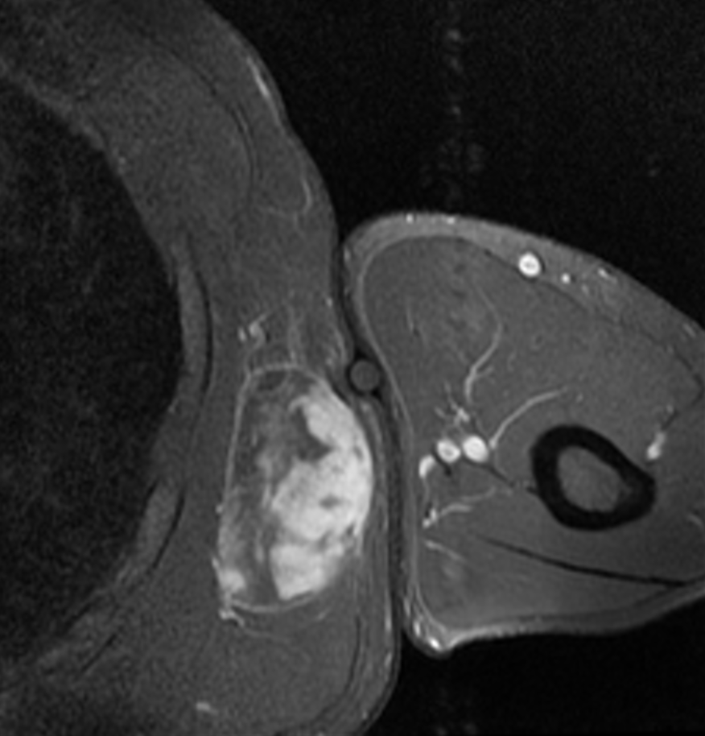

Ficha del catálogo
Sarcoma de partes blandas
- Sistema
- Óseo
- Modalidad
- RM
- Región
- Muslo y extremidades
- Dificultad
- Avanzado
Los sarcomas de partes blandas son tumores poco frecuentes que se presentan como una masa indolora de crecimiento progresivo, muchas veces confundida al principio con un hematoma o con una lesión banal. El muslo es la localización más habitual. La resonancia es la técnica de referencia para caracterizar la lesión y sobre todo para definir su relación con los paquetes vasculonerviosos y con los compartimentos musculares. El manejo debe centralizarse porque una biopsia mal planificada compromete la cirugía conservadora posterior.
Técnica
Resonancia con secuencias potenciadas en T1 y en T2 con supresión grasa en varios planos, más estudio dinámico o tardío tras contraste. Conviene incluir un plano que abarque toda la lesión y el hueso vecino.
Qué observar
- Masa profunda a la fascia con tamaño superior a cinco centímetros
- Señal heterogénea con áreas de necrosis y realce irregular
- Márgenes infiltrantes o seudocápsula con edema perilesional
- Relación con el paquete vasculonervioso y con la cortical del hueso adyacente
- Vasos internos prominentes y ausencia de contenido graso puro
- Compartimento anatómico afectado y posible extensión a compartimentos vecinos
Hallazgos
Masa profunda heterogénea de gran tamaño con realce irregular, áreas de necrosis y desplazamiento o contacto con estructuras neurovasculares.
Perlas
El tamaño mayor de cinco centímetros, la localización profunda a la fascia y el crecimiento documentado son los tres datos que más deben preocupar en una masa de partes blandas. Un hematoma sin traumatismo claro que no evoluciona como se espera debe estudiarse como un tumor hasta demostrar lo contrario.
Diagnóstico diferencial
- Lipoma de partes blandas
- Señal idéntica a la grasa en todas las secuencias y sin realce nodular.
- Hematoma organizado
- Antecedente traumático, evolución de la señal hemática y sin realce interno sólido.
- Absceso de partes blandas
- Contenido líquido con realce solo periférico y contexto clínico infeccioso.
Simuladores
- Miositis osificante en fase temprana
- Tumor de la vaina nerviosa benigno
- Malformación vascular con componente sólido aparente
Por modalidad
- RM
- Técnica de elección para caracterizar y estadificar localmente
- TC
- Valora calcificaciones y sirve para el estudio de extensión torácica
- US
- Primera aproximación que orienta entre lesión sólida y quística
Protocolo
Resonancia multiplanar con contraste de todo el segmento afectado, seguida de estudio de extensión pulmonar. La biopsia debe planificarse con el equipo que realizará la resección para que el trayecto se extirpe después.
Clasificación
La estadificación combina el grado histológico, el tamaño, la profundidad respecto a la fascia y la presencia de metástasis.
Errores frecuentes
- Asumir que una masa indolora es benigna
- Realizar una biopsia con trayecto que contamine compartimentos sanos
- No describir la relación de la lesión con los vasos y nervios principales

sarcoma partes blandas masa profunda resonancia biopsia compartimento estadificacion